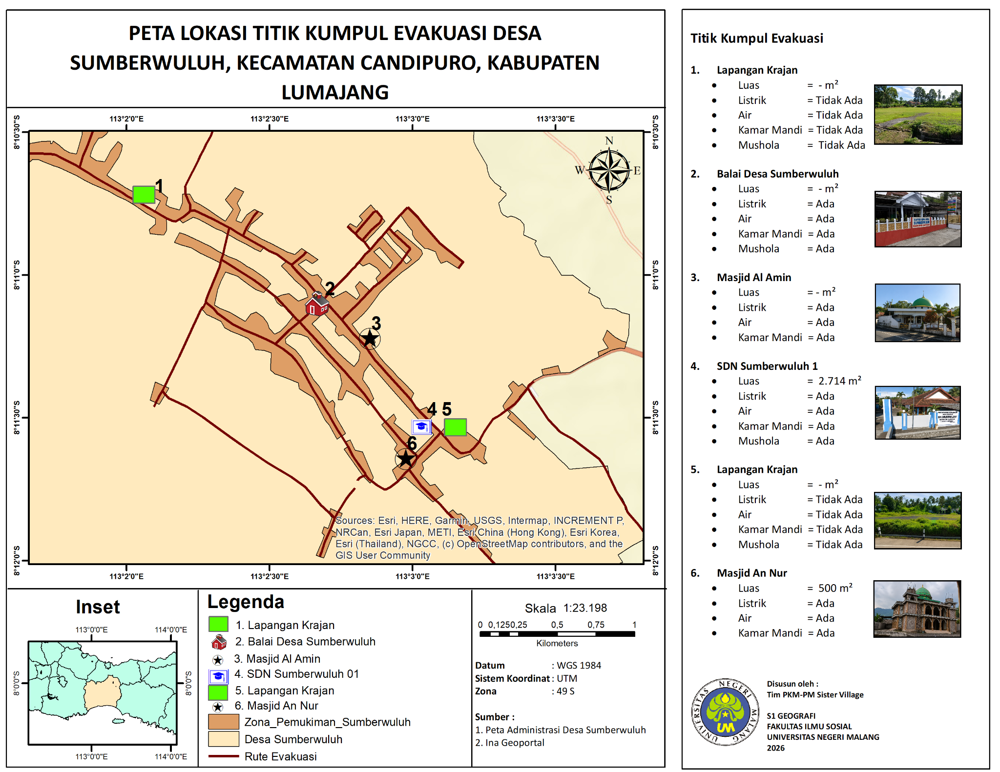
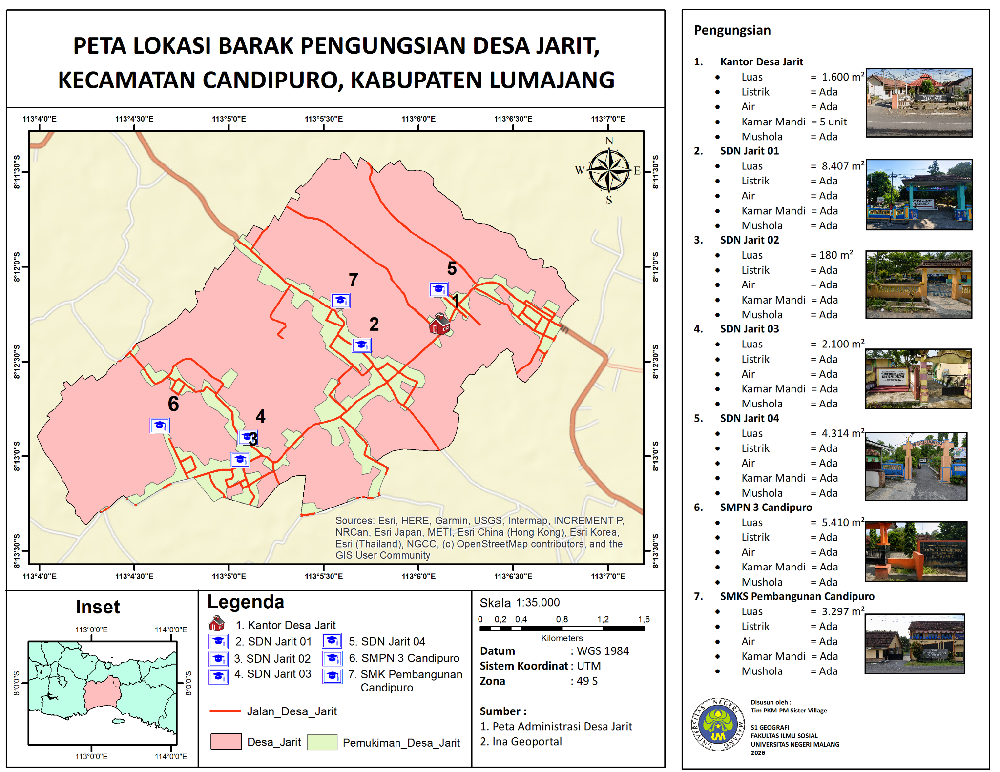
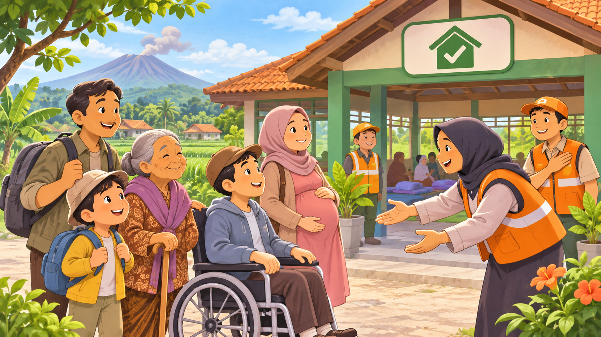
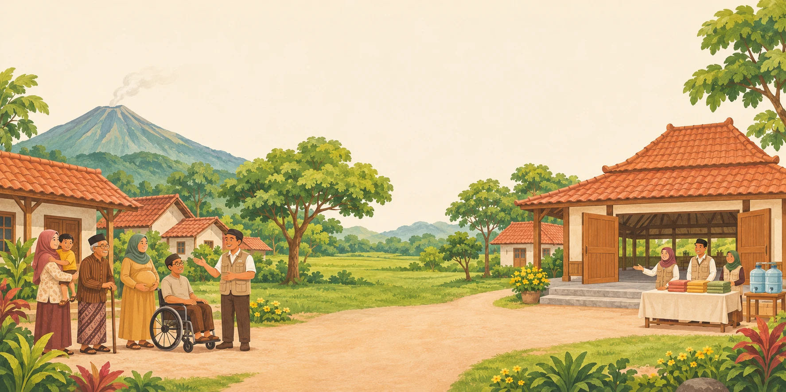
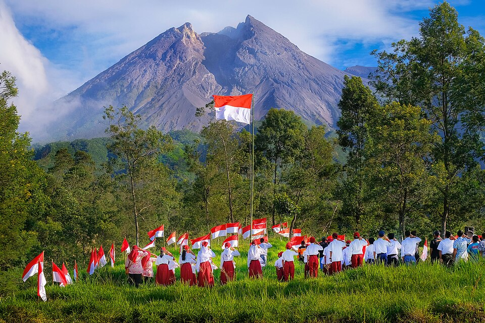

☁
Kenali bahaya
Pahami tanda peringatan serta bahaya abu vulkanik, awan panas, dan lahar.
Kenali bahaya Gunung Semeru, siapkan keluargamu, dan pelajari bagaimana Desa Sumberwuluh dan Jarit dapat saling menjaga.
Kesiapsiagaan dapat dimulai dengan hal-hal sederhana yang dilakukan bersama keluarga.
Pahami tanda peringatan serta bahaya abu vulkanik, awan panas, dan lahar.
Susun rencana, kenali kebutuhan khusus, dan isi tas siaga bersama.
Pelajari konsep desa bersaudara dan cara menuju tempat pengungsian.
Utamakan keselamatan. Ikuti arahan petugas dan informasi resmi BPBD/PVMBG; jangan menggunakan peta prototipe ini untuk menentukan rute saat darurat.
Kartu bergambar, kuis seru, dan permainan tas siaga untuk mengenal langkah aman.
Panduan untuk ibu hamil, anak, lansia, penyandang disabilitas, dan pekerja tambang pasir.
Belajar dari bahaya yang mungkin terjadi, lalu susun persiapan sederhana bersama keluarga.
Aktifkan suara sesuai kebutuhan. Pembacaan dapat dijeda atau dihentikan kapan saja.
Gunung api dapat mengeluarkan material panas, abu, batuan, dan gas. Dampaknya tidak selalu berhenti ketika letusan berakhir. Pelajari bagaimana setiap bahaya terjadi dan langkah yang bisa kita siapkan.
Awan panas dan guguran bergerak mengikuti bentuk lereng. Lahar dapat menyusuri alur sungai, sedangkan abu dapat terbawa angin ke wilayah yang lebih jauh. Karena itu, tidak melihat letusan bukan berarti keadaan pasti aman.
Material vulkanik yang sangat panas dapat runtuh atau terlontar, lalu meluncur cepat menuruni lereng dan mengikuti lembah. Di Semeru, guguran kubah atau lidah lava juga dapat memicu awan panas.
Panas ekstrem, material batuan, dan kecepatannya dapat menyebabkan luka berat, merusak bangunan, serta memutus akses jalan. Awan panas tidak aman untuk didekati atau disaksikan dari dekat.
Jangan menunggu awan panas terlihat atau mencoba mendahuluinya dengan berjalan kaki ketika sudah berada di jalur luncuran.
Hujan di lereng atau hulu gunung mengangkut endapan abu, pasir, batu, dan material vulkanik melalui sungai. Lahar dapat terjadi meskipun saat itu tidak tampak letusan baru.
Alirannya dapat sangat kuat, membawa batu dan kayu, mengikis tebing, merusak jembatan, serta meluap ke permukiman di sekitar sungai.
Jangan menyeberangi aliran lahar atau mendekat ke tepi sungai untuk melihat, merekam, maupun mengambil material.
Abu dan pecahan material halus terangkat saat erupsi, kemudian jatuh mengikuti arah serta kecepatan angin. Daerah yang jauh dari kawah pun bisa terdampak.
Abu mengiritasi mata dan pernapasan, mengganggu jarak pandang, membuat jalan licin, serta dapat menambah beban atap ketika menumpuk dan basah.
Jangan mengendarai kendaraan bila jarak pandang buruk atau naik ke atap yang tertimbun abu untuk membersihkannya sendiri.
Lava merupakan batuan cair panas yang keluar dari gunung. Bagian yang tidak stabil dapat gugur menuruni lereng. Letusan juga bisa melontarkan batuan panas di sekitar kawah.
Material bersuhu tinggi dapat menyebabkan luka bakar, benturan, dan kebakaran. Guguran lava pada kondisi tertentu dapat berkaitan dengan pembentukan awan panas.
Jangan mendekati material pijar atau lokasi guguran hanya untuk mengambil foto.
Aktivitas vulkanik dapat melepaskan gas ke udara. Sebagian gas berbahaya dapat mengganggu pernapasan dan tidak semuanya mudah dikenali melalui bau atau warna.
Paparan gas tertentu bisa mengiritasi mata dan saluran napas. Lokasi risikonya bergantung pada jenis gas, arah angin, dan kondisi topografi.
Jangan menganggap udara aman hanya karena tidak terlihat asap atau tidak tercium bau.
PVMBG mengidentifikasi potensi awan panas dan lahar di sepanjang alur seperti Besuk Kobokan, Besuk Bang, Besuk Kembar, dan Besuk Sat serta anak sungainya. Luas kawasan terlarang dan rekomendasi jarak aman dapat berubah menurut kondisi aktivitas. Selalu periksa informasi PVMBG terbaru dan ikuti keputusan BPBD/petugas setempat.
Periksa informasi resmi MAGMA Indonesia ↗Centang perlengkapan yang sudah disiapkan. Daftar ini contoh umum—sesuaikan dengan kebutuhan anggota keluarga dan arahan setempat.
Setiap orang memerlukan dukungan yang berbeda. Pelajari langkah sebelum, saat, dan setelah evakuasi untuk ibu hamil, anak-anak, lansia, penyandang disabilitas, serta pekerja tambang pasir.
Perhatikan peringatan dan instruksi BPBD, pemerintah desa, atau petugas berwenang.
Pastikan anak-anak, ibu hamil, lansia, dan penyandang disabilitas memperoleh bantuan yang diperlukan.
Jangan mengambil jalan pintas melalui sungai atau kawasan berbahaya. Gunakan jalur yang dinyatakan aman oleh petugas.
Laporkan anggota keluarga serta kebutuhan kesehatan dan bantuan khusus kepada pengelola pos.
Yuk jadi sahabat kecil yang tahu cara menjaga diri saat Gunung Semeru menunjukkan aktivitasnya.
Ajak orang dewasa menemani saat belajar, ya.
Jawab 12 pertanyaan tentang kesiapsiagaan, pendampingan, dan evakuasi. Setiap jawaban disertai penjelasan. Tidak perlu mendaftar akun.
Ketuk barang-barang penting yang sebaiknya disiapkan. Ini latihan; orang dewasa tetap membantu menyiapkan tas sungguhan.
Pilah kartu tindakan: mana yang boleh dilakukan, mana yang harus dihindari? Kumpulkan 6 bintang sambil belajar bersama pendamping.
Baca kartu, lalu pilih salah satu jawaban di atas.
Temukan jalan menuju pendamping di titik kumpul. Hindari sungai dan jalan tertutup. Ajak orang dewasa menemani bermain, ya!
Arahkan tokoh biru ke bendera titik kumpul. Gunakan tombol arah di bawah atau fokuskan papan dan tekan tombol panah keyboard.
Ikuti jalan terbuka. Jika menemui jalan buntu, kamu boleh kembali. Tidak perlu terburu-buru.
Posisi awal.
Peta permainan ini hanya ilustrasi untuk belajar, bukan jalur evakuasi nyata. Saat mengungsi, tetap bersama pendamping dan ikuti jalur serta titik kumpul yang ditetapkan petugas.
Cocokkan 6 perlengkapan dengan kegunaannya. Ketuk dua kartu untuk membukanya. Jika belum cocok, ingat letaknya lalu tutup kembali. Kamu juga bisa memakai Tab dan Enter atau Spasi.
Cari pasangan perlengkapan + kegunaan, bukan dua gambar yang sama. Tanpa batas waktu!
Pilih dua kartu.
Semua pasangan berhasil ditemukan. Ajak keluarga menyebutkan barang lain yang dibutuhkan.
Kenali 6 titik kumpul Sumberwuluh, 7 calon barak pengungsian di Jarit, jaringan jalan, dan lapisan Kawasan Rawan Bencana (KRB). Pilih lokasi untuk melihat informasi fasilitasnya.
Ketiga peta di bawah merupakan materi yang disediakan tim PKM-PM Sister Village Universitas Negeri Malang (2026). Klik untuk memperbesar dan membaca simbol, nama tempat, serta informasi fasilitas.
 01 · Koridor jalan dan kondisi ruasHijau: baik; oranye: kurang baik. Buka peta ↗
01 · Koridor jalan dan kondisi ruasHijau: baik; oranye: kurang baik. Buka peta ↗
02 · Enam titik kumpul SumberwuluhFasilitas dasar di setiap lokasi. Buka peta ↗
03 · Tujuh calon barak JaritBangunan dan estimasi luas tapak. Buka peta ↗
Peta membantu kita mengenal tempat, tetapi pemilihan titik kumpul dan shelter harus mempertimbangkan transportasi, akses kursi roda, kebutuhan ibu hamil, anak, lansia, dan pendampingan yang tersedia di lapangan.
Baca informasi KRB Semeru dari Badan Geologi ↗Saat satu desa menghadapi bahaya, desa saudaranya bersiap menyambut. Kenali gagasan, cara kerja, dan contoh nyata Sister Village atau Desa Paseduluran.
Sister Village atau Desa Bersaudara adalah kerja sama yang dipersiapkan sebelum bencana antara desa asal yang menghadapi ancaman dan desa penyangga yang dinilai lebih aman untuk menerima warga jika evakuasi diperlukan.
Kedua desa saling mengenal dan menyusun kesepakatan tentang siapa yang mengungsi, ke mana tujuan, bagaimana transportasi dilakukan, siapa mendampingi kelompok rentan, serta bagaimana kebutuhan dasar dipenuhi. Kerja sama harus dikoordinasikan dengan pemerintah dan lembaga penanggulangan bencana.
Gampangnya: saat harus meninggalkan rumah, keluarga sudah tahu desa tujuan dan ada saudara yang bersiap menyambut.
Penduduk, relawan, dan perangkat desa memahami kebutuhan satu sama lain.
Rencana tujuan, sarana, komunikasi, tanggung jawab, dan dukungan disusun bersama.
Jalur, transportasi, penerimaan, dan pelayanan diuji melalui simulasi berkala.
Pilih tahapan untuk melihat peran kedua desa, atau putar cerita untuk mengikuti animasinya. Inilah gambaran konsep kerja sama yang perlu disepakati dan dilatih bersama.

Kerja sama terus berlanjut: kebutuhan warga diperbarui bersama. Kepulangan hanya dilakukan setelah izin petugas, lalu kedua desa mengevaluasi dan memperbaiki rencana.
Unduh gambar ilustrasi ↓Sumberwuluh–Jarit ditampilkan sebagai rancangan kajian tim PKM-PM 2026. Saat kajian dilakukan, MoU formal belum ada; penerapan memerlukan kesepakatan dan validasi pihak berwenang. Animasi ini bukan instruksi evakuasi.
Contoh di bawah mengikuti rancangan kajian tim PKM-PM 2026. Penerapannya memerlukan keputusan, kesepakatan, dan kesiapan resmi pihak terkait.
Mengidentifikasi warga berisiko, mengatur informasi peringatan, titik kumpul, bantuan transportasi, dan pendamping bagi kelompok rentan sesuai arahan petugas.
Menyiapkan penerimaan, pendataan, ruang penampungan, air bersih, sanitasi, kebutuhan ibu dan anak, serta koordinasi kesehatan dan logistik.
Prinsip penting: warga tidak boleh diarahkan ke suatu jalur atau shelter hanya karena tercantum pada prototipe ini. Jalur dan tujuan aktual harus ditentukan pihak berwenang dengan memperhatikan KRB dan kondisi terkini.
Kerja sama desa bersaudara tidak berhenti ketika warga tiba di barak. Ketuk setiap tahapan untuk melihat tindakan yang perlu disiapkan.
Keunggulan ini dapat tercapai jika jalur, fasilitas, sumber daya, dan pembagian tugas benar-benar disepakati, diuji, serta diperbarui.
Warga sudah mengenal lokasi tujuan, cara berkumpul, dan orang yang dapat dihubungi sehingga ketidakpastian berkurang.
Relawan dan perangkat kedua desa memiliki pembagian peran, bukan hanya bergantung pada bantuan spontan.
Transportasi, pendamping, alat bantu, serta kebutuhan ibu dan anak dapat direncanakan secara individual lebih awal.
Fasilitas, logistik, tenaga kesehatan, dan ruang penerimaan di desa penyangga dapat dipersiapkan sebelum kedatangan.
Dua pasangan dari Jawa Tengah berikut sudah tercatat dalam dokumen pemerintah atau kajian kebencanaan. Keduanya adalah contoh historis, bukan informasi kesiapan operasional saat ini.
Desa Ngargomulyo (Kecamatan Dukun) berpasangan dengan Desa Tamanagung (Kecamatan Muntilan). Keduanya menjadi proyek percontohan desa bersaudara sejak 2013. Pada peningkatan aktivitas Merapi tahun 2020, pemerintah desa penyangga menata kembali kebutuhan ruang bagi pengungsi.

Desa Balerante di Kecamatan Kemalang dipasangkan dengan Desa Kebondalem Lor di Kecamatan Prambanan sebagai desa penyangga. Pasangan ini dibahas dalam kajian mitigasi berbasis Desa Paseduluran dan tercatat pada rencana kontingensi Merapi.
Foto referensi menggunakan lisensi Creative Commons yang mengizinkan penggunaan ulang dengan atribusi. Gambar ilustratif dibedakan secara eksplisit dari dokumentasi nyata.
Kajian tim PKM-PM (2026) mengidentifikasi potensi kerja sama dan tujuh titik fasilitas di Jarit. Namun, penelitian juga mencatat belum adanya MoU formal antar-desa saat kajian dilakukan; kondisi jalur, daya tampung, aksesibilitas, dan kesiapan fasilitas memerlukan validasi lebih lanjut. Ini adalah materi pembelajaran, bukan pengumuman kerja sama resmi atau instruksi evakuasi.
Temuan penelitian Sumberwuluh–Jarit dari tim PKM-PM Sister Village Universitas Negeri Malang, disajikan agar warga, keluarga, dan pendidik mudah mempelajarinya.
Persentase kelompok rentan di Desa Sumberwuluh sebagaimana dikutip penelitian dari Profil Desa Sumberwuluh tahun 2025. Angka ini membantu perencanaan pendampingan; setiap orang tetap memiliki kebutuhan dan kemampuan yang berbeda.
Catatan: Penelitian tidak mencantumkan angka khusus ibu hamil. Kategori di atas dapat saling beririsan dan bukan pembagian kelompok yang jumlahnya harus 100%.
Besaran wilayah yang dicatat kajian memperlihatkan pentingnya pertanian dan perkebunan bagi kehidupan warga. Gangguan bencana dapat berdampak sekaligus pada keamanan dan penghidupan.
Panjang batang dibandingkan dengan kategori terbesar, bukan proporsi terhadap seluruh luas desa. Kategori mengikuti naskah penelitian dan tidak dinyatakan sebagai klasifikasi tutupan lahan yang saling eksklusif.
Lokasi dipetakan oleh tim PKM-PM pada 2026. Luas merupakan luas yang tercantum dalam peta kajian, bukan daya tampung manusia atau jaminan shelter siap digunakan hari ini.
| Lokasi di Jarit | Luas tercantum | Catatan |
|---|---|---|
| Kantor Desa Jarit | 1.600 m² | Fasilitas pemerintahan |
| SDN Jarit 01 | 8.407 m² | Sekolah |
| SDN Jarit 02 | 180 m² | Sekolah |
| SDN Jarit 03 | 2.100 m² | Sekolah |
| SDN Jarit 04 | 4.314 m² | Sekolah |
| SMPN 3 Candipuro | 5.410 m² | Sekolah |
| SMKS Pembangunan Candipuro | 3.297 m² | Sekolah |
Penelitian menilai tujuh aspek kemitraan. Status berikut adalah hasil penilaian tim pada 2026, bukan sertifikasi kesiapan dari BPBD.
Akses melalui jalan nasional/kabupaten dan ketersediaan angkutan bantuan.
Tujuh lokasi penampungan dan dukungan layanan dasar dipetakan.
Kajian menilai Jarit lebih terlindung dari koridor utama ancaman Semeru.
Jejaring kader, relawan, dan masyarakat dapat mendukung penerimaan.
Terdapat fasilitas gudang dan akses air bersih menurut kajian.
Belum ada MoU formal antara Sumberwuluh dan Jarit yang dilaporkan dalam penelitian.
Potensi penghidupan lokal ada, tetapi kapasitas penyerapan tenaga kerja sementara belum dipetakan.
Kajian memakai pendekatan deskriptif kualitatif melalui wawancara dan observasi lapangan, dilengkapi profil desa, dokumen kebencanaan, peta KRB Semeru, dan analisis jaringan jalan menggunakan ArcGIS Network Analyst.
Langkah evakuasi untuk ibu hamil, anak-anak, lansia, penyandang disabilitas, serta pekerja tambang pasir. Susun rencana sejak sebelum keadaan darurat.
Sepakati pendamping utama dan pengganti, transportasi, cara menerima peringatan, serta titik kumpul yang ditetapkan petugas. Saat ada perintah evakuasi, jangan menunda untuk mengambil barang. Minta bantuan lebih awal bila perpindahan membutuhkan waktu tambahan.
Materi ini untuk persiapan dan latihan. Jalur, zona larangan, serta lokasi tujuan mengikuti keputusan BPBD/PVMBG dan petugas setempat; halaman ini tidak menampilkan kondisi bahaya secara langsung.
Siapkan perpindahan dan akses layanan kesehatan sejak sebelum keadaan darurat.
Pendampingan yang konsisten membantu anak tetap aman dan tidak terpisah dari keluarga.
Sesuaikan pendampingan dengan kemampuan bergerak, mendengar, melihat, dan kondisi kesehatan.
Libatkan orang yang bersangkutan dalam setiap keputusan; kebutuhan tiap individu berbeda.
Penambang, operator alat berat, dan sopir angkutan material dapat terpapar langsung karena bekerja di dasar sungai. Kesiapsiagaan harus menjadi tanggung jawab bersama pekerja, pengelola, dan petugas.
Air hujan dapat mengangkut endapan vulkanik menjadi lahar, meskipun di lokasi tambang tidak hujan dan tidak ada letusan baru.
Campuran air, pasir, batu, dan kayu dapat merusak jalan serta jembatan dan memutus akses keluar. Jangan menganggapnya banjir biasa yang bisa diterobos.
Alur sungai yang berhulu di Semeru dapat dilalui awan panas dan guguran. Jangan menunggu bahaya terlihat untuk meninggalkan kawasan yang dilarang.
Material panas yang bertemu air dapat menimbulkan letupan sekunder. Jangan mendekati atau menggali endapan yang dinyatakan berbahaya oleh petugas.
“Langit di sini cerah”, “air sudah surut”, atau “kita biasa bekerja di sini”. Kondisi hulu dan rekomendasi petugas tetap menentukan keputusan berhenti serta kembali bekerja.
Untuk pengelola: lakukan pengarahan sebelum kerja, pastikan peringatan diterima semua pekerja termasuk yang berada dekat mesin bising, dan sepakati kewenangan menghentikan pekerjaan tanpa menunggu proses pemuatan selesai.
Latih rencana bersama orang yang bersangkutan, keluarga, pengelola tempat kerja, dan petugas. Jangan kembali ke kawasan bahaya sebelum diizinkan.
Ringkasan edukasi disusun dari sumber berikut, ditinjau 9 November 2026. Rekomendasi status dan batas zona bahaya dapat berubah; periksa informasi resmi sebelum beraktivitas.
Menggunakan suara dari browser/perangkat. Kualitas pelafalan Bahasa Indonesia bergantung pada suara yang tersedia.